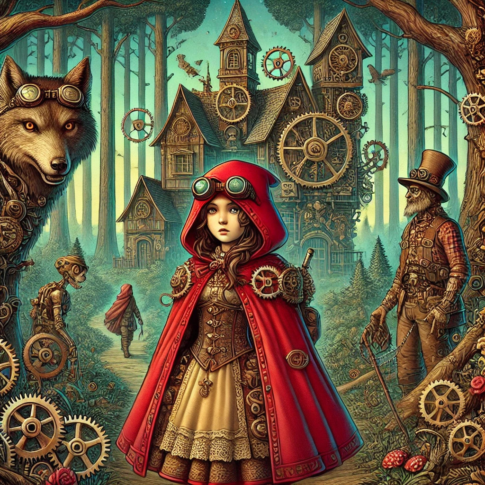

Vamos corrigir o código para que a rede "Chapeuzinho Vermelho" tenha apenas uma camada oculta com 3 neurônios, conforme solicitado. Além disso, vou explicar como você pode associar labels (etiquetas) às entradas e saídas para identificar o que cada ponto representa.
Rede Chapeuzinho Vermelho - Parte 2Código corrigido (rede com apenas 1 camada oculta):Explicação das mudançasAssociando labels (etiquetas) aos neurôniosExemplo de dados com labelsAcrescentando labels aos nerônios da camada invisívelExibindo resultados com labelsSaída esperadaVersão 3 da Rede Chapeuzinho VermelhoAcrescentando gráficos de barras para as saídasAcrescentado apresentação das entradas ativadasIdéia FinalVersão 5 do códigoSaída geradaResumoHiperparâmetros da rede1. Epochs2. Batch Size3. Relação entre Epochs e Batch Size4. Impacto no Treinamento5. Como escolher os valores?6. Aplicando ao seu código7. Dicas para melhorar o treinamentoResumo
xxxxxxxxxximport tensorflow as tffrom tensorflow.keras.models import Sequentialfrom tensorflow.keras.layers import Dense# Definindo o modelomodel = Sequential()# Camada de entrada e única camada ocultamodel.add(Dense(units=3, input_dim=6, activation='sigmoid')) # 6 entradas e 3 neurônios na camada oculta# Camada de saídamodel.add(Dense(units=7, activation='sigmoid')) # 7 neurônios na camada de saída# Compilando o modelomodel.compile(optimizer='adam', loss='binary_crossentropy', metrics=['accuracy'])# Resumo do modelomodel.summary()Apenas uma camada oculta:
Dense(units=3, activation='sigmoid')), deixando apenas uma camada oculta com 3 neurônios.input_dim=6) se conecta diretamente à camada oculta, que por sua vez se conecta à camada de saída.Função de ativação sigmoidal:
Resumo do modelo:
model.summary() exibe a arquitetura da rede, mostrando o número de parâmetros em cada camada.Executando...
Executando esta primeira parte num interpretador Python, obtemos:
xxxxxxxxxx(tf2.10) fernandopassold@MacBook-Pro-de-Fernando [21:38:03] [/Volumes/DADOS/Users/fpassold/Documents/IA/2025/RNs/Red] -> % python red_parte_1.py 2025-03-17 21:38:12.399863: I tensorflow/core/platform/cpu_feature_guard.cc:193] This TensorFlow binary is optimized with oneAPI Deep Neural Network Library (oneDNN) to use the following CPU instructions in performance-critical operations: AVX2 FMATo enable them in other operations, rebuild TensorFlow with the appropriate compiler flags.2025-03-17 21:38:16.334596: I tensorflow/core/platform/cpu_feature_guard.cc:193] This TensorFlow binary is optimized with oneAPI Deep Neural Network Library (oneDNN) to use the following CPU instructions in performance-critical operations: AVX2 FMATo enable them in other operations, rebuild TensorFlow with the appropriate compiler flags.Model: "sequential"_________________________________________________________________ Layer (type) Output Shape Param # ================================================================= dense (Dense) (None, 3) 21 dense_1 (Dense) (None, 7) 28 =================================================================Total params: 49Trainable params: 49Non-trainable params: 0_________________________________________________________________(tf2.10) fernandopassold@MacBook-Pro-de-Fernando [21:38:16] [/Volumes/DADOS/Users/fpassold/Documents/IA/2025/RNs/Red] -> % Obs.: Para executar estes scripts se faz necessário já ter o TensorFlow instalado. instruções sobre Como instalar o TensorFlow, clicar aqui.
Em redes neurais, os dados de entrada e saída são geralmente representados como arrays numéricos. No entanto, você pode associar labels (etiquetas) a esses dados para identificar o que cada ponto representa. Isso é feito fora do modelo, durante o pré-processamento dos dados ou na exibição dos resultados.
Aqui está um exemplo de como você pode associar labels às entradas e saídas:
xxxxxxxxxx# Dados de entrada com labelsinput_labels = ["Característica 1", "Característica 2", "Característica 3", "Característica 4", "Característica 5", "Característica 6"]# Dados de saída com labelsoutput_labels = ["Saída 1", "Saída 2", "Saída 3", "Saída 4", "Saída 5", "Saída 6", "Saída 7"]# Dados de treinamento (exemplo)X_train = [ [0, 1, 0, 1, 0, 1], # Exemplo 1 [1, 0, 1, 0, 1, 0], # Exemplo 2 [0, 0, 1, 1, 0, 0] # Exemplo 3]# Rótulos de treinamento (exemplo)y_train = [ [0, 1, 0, 1, 0, 1, 0], # Rótulo para o Exemplo 1 [1, 0, 1, 0, 1, 0, 1], # Rótulo para o Exemplo 2 [0, 0, 1, 1, 0, 0, 1] # Rótulo para o Exemplo 3]É possível associar labels (etiquetas) aos neurônios da camada oculta (invisível) para facilitar a interpretação do que cada neurônio representa. No entanto, é importante entender que os neurônios em uma camada oculta não têm um significado intrínseco ou direto como os neurônios de entrada ou saída. Eles aprendem representações internas dos dados durante o treinamento, e essas representações podem não ser diretamente interpretáveis.
Ainda assim, você pode atribuir labels aos neurônios da camada oculta para fins de visualização ou análise. Abaixo, vou mostrar como você pode fazer isso. No código Python, após definir a rede, você pode acrescentar linhas com:
xxxxxxxxxx# Labels para os neurônios da camada ocultahidden_layer_labels = ["Neurônio Oculta 1", "Neurônio Oculta 2", "Neurônio Oculta 3"]Após treinar o modelo, você pode exibir os resultados associando os labels às saídas:
xxxxxxxxxx# Treinando o modelomodel.fit(X_train, y_train, epochs=10, batch_size=1)# Fazendo previsõespredictions = model.predict(X_train)# Exibindo previsões com labelsfor i, pred in enumerate(predictions): print(f"Exemplo {i + 1}:") for j, value in enumerate(pred): print(f" {output_labels[j]}: {value:.4f}")Se o modelo for treinado e fizer previsões, a saída será algo como:
xxxxxxxxxxExemplo 1:Saída 1: 0.1234Saída 2: 0.9876Saída 3: 0.4567Saída 4: 0.8765Saída 5: 0.2345Saída 6: 0.7654Saída 7: 0.3456Exemplo 2:Saída 1: 0.6543Saída 2: 0.3210Saída 3: 0.7890Saída 4: 0.4321Saída 5: 0.5678Saída 6: 0.8901Saída 7: 0.1234...
Vamos incrementar algo mais o código da rede para o Chapeuzinho Vermelho acrescentando 2 funções extras:
Recebe um valor de ativação (entre 0 e 1) e retorna uma string com caracteres #
O número de caracteres # é proporcional ao valor de ativação, arredondado para o inteiro mais próximo.
Por exemplo:
Exibição das previsões com barras:
max_length).input_data) e os labels das entradas (input_labels`).Segue listagem red_version_5.py :
xxxxxxxxxx"""Fernando Passold, em 18/03/2025Parte 1: Inicializando rede do Chapeuzinho Vermelho (rede MLP> 6 x 3 x 7)"""import tensorflow as tffrom tensorflow.keras.models import Sequentialfrom tensorflow.keras.layers import Denseimport numpy as npimport time # Importando a biblioteca time para medir o tempoimport matplotlib.pyplot as plt # Importando a biblioteca para gráficos# Eventualmente será necessário `conda install matplotlib`# Acrescentando Função para exibir exibe uma barra de caracteres # proporcional ao valor de ativaçãodef bargraph(value, max_length=20): """ Retorna uma string com caracteres '#' proporcional ao valor. - value: Valor de ativação (entre 0 e 1). - max_length: Número máximo de caracteres '#' (padrão é 10). """ num_hashes = round(value * max_length) # Arredonda para o número inteiro mais próximo return '#' * num_hashes# Função para exibir os labels das entradas ativadasdef activated_inputs(input_data, input_labels): """ Retorna uma string com os labels das entradas ativadas (valor = 1). - input_data: Dados de entrada (array binário). - input_labels: Lista de labels correspondentes às entradas. """ activated = [input_labels[i] for i, value in enumerate(input_data) if value == 1] return ', '.join(activated)# Função para calcular o comprimento máximo dos labelsdef max_label_length(labels): """ Retorna o comprimento da maior string em uma lista de labels. - labels: Lista de strings. """ return max(len(label) for label in labels)# Definindo o modelomodel = Sequential()# Camada de entrada e única camada ocultamodel.add(Dense(units=3, input_dim=6, activation='sigmoid')) # 6 entradas e 3 neurônios na camada oculta# Camada de saídamodel.add(Dense(units=7, activation='sigmoid')) # 7 neurônios na camada de saída# Compilando o modelomodel.compile(optimizer='adam', loss='binary_crossentropy', metrics=['accuracy'])#### Parte 2: Associando labels (etiquetas) às entradas e saída da rede# Dados de entrada com labelsinput_labels = ["1. Grandes orelhas", "2. Grandes olhos", "3. Grandes dentes", "4. Gentil", "5. Enrugado", "6. Bonito"]# Dados de saída com labelsoutput_labels = ["1. Fugir", "2. Gritar", "3. Procurar pelo lenhador", "4. Beijar na bochecha", "5. Aproximar-se", "6. Oferecer comida", "7. Flertar"]# Calcula o comprimento máximo dos labels de saidamax_input_label_length = max_label_length(output_labels)# Isso é usado para determinar quantos espaços em branco devem ser adicionados aos labels menores.# Labels para os neurônios da camada ocultahidden_layer_labels = ["1. Lobo", "2. Avó", "3. Lenhador"]# Resumo do modelomodel.summary()# Dados de treinamento (exemplo)X_train = [# 1 2 3 4 5 6 [1, 1, 1, 0, 0, 0], # É o Lobo 1 [1, 1, 1, 0, 0, 1], # É o Lobo 2 [1, 0, 1, 1, 0, 0], # É o Lobo 3 [0, 1, 0, 1, 1, 1], # É a Vovó 1 [0, 1, 0, 1, 1, 0], # É a Vovó 2 [0, 0, 0, 1, 1, 1], # É a Vovó 3 [1, 0, 0, 1, 1, 0], # É a Vovó 4 [1, 0, 0, 1, 1, 1], # É a Vovó 5 [0, 0, 0, 1, 0, 0], # É o Lenhador 1 [0, 0, 0, 1, 0, 1], # É o Lenhador 2 [0, 0, 0, 1, 1, 0] # É o Lenhador 3]# Rótulos de treinamento (exemplo)y_train = [# 1 2 3 4 5 6 7 [1, 1, 1, 0, 0, 0, 0], # Rótulo para Lobo 1 [1, 0, 1, 0, 0, 0, 0], # Rótulo para Lobo 2 [1, 1, 1, 0, 0, 0, 0], # Rótulo para Lobo 3 [0, 0, 0, 1, 1, 1, 0], # Rótulo para Vovó 1 [0, 0, 0, 0, 1, 1, 0], # Rótulo para Vovó 2 [0, 0, 0, 0, 1, 1, 0], # Rótulo para Vovó 3 [0, 0, 0, 0, 1, 1, 0], # Rótulo para Vovó 4 [0, 0, 0, 1, 1, 1, 0], # Rótulo para Vovó 5 [0, 0, 0, 0, 1, 0, 1], # Rótulo para Lenhador 1 [0, 0, 0, 1, 1, 1, 1], # Rótulo para Lenhador 2 [0, 0, 0, 0, 1, 0, 0] # Rótulo para Lenhador 3]# Listas para armazenar as métricas de treinamentoloss_history = []accuracy_history = []# Função de callback para atualizar o gráfico a cada épocaclass TrainingPlot(tf.keras.callbacks.Callback): def on_train_begin(self, logs={}): # Inicializa a figura plt.ion() # Ativa o modo interativo do matplotlib self.fig, (self.ax1, self.ax2) = plt.subplots(2, 1, figsize=(8, 6)) self.fig.suptitle('Evolução do Treinamento') self.ax1.set_ylabel('Loss') self.ax2.set_ylabel('Accuracy') self.ax2.set_xlabel('Epoch') self.loss_line, = self.ax1.plot([], [], 'm-', label='Loss') self.accuracy_line, = self.ax2.plot([], [], 'b-', label='Accuracy') self.ax1.legend() self.ax2.legend() plt.show() def on_epoch_end(self, epoch, logs={}): # Atualiza as listas de métricas loss_history.append(logs.get('loss')) accuracy_history.append(logs.get('accuracy')) # Atualiza os dados do gráfico self.loss_line.set_data(range(len(loss_history)), loss_history) self.accuracy_line.set_data(range(len(accuracy_history)), accuracy_history) # Ajusta os limites dos eixos self.ax1.relim() self.ax1.autoscale_view() self.ax2.relim() self.ax2.autoscale_view() # Redesenha a figura self.fig.canvas.draw() plt.pause(0.1) # Pausa para atualizar a janela gráfica# Criando uma instância do callbackplot_callback = TrainingPlot()# Solicita ao usuário o número de épocastry: epochs = int(input("Digite o número de épocas desejadas: "))except ValueError: print("Entrada inválida. Usando o valor padrão de 50 épocas.") epochs = 50 # Valor padrão caso o usuário insira algo inválido# Medindo o tempo de processamento do treinamentostart_time = time.time() # Captura o tempo inicial# Treinando o modelo# model.fit(X_train, y_train, epochs=100, batch_size=1)# Treinando o modelo com o callbackmodel.fit(X_train, y_train, epochs=epochs, batch_size=1, verbose=0, callbacks=[plot_callback])end_time = time.time() # Captura o tempo finaltraining_time = end_time - start_time # Calcula o tempo total de treinamento# Exibindo o tempo de processamentoprint(f"\nTempo de processamento do treinamento: {training_time:.2f} segundos")# Fazendo previsõespredictions = model.predict(X_train)## Exibindo resultados""" Saída mais "simples"# Exibindo previsões com labelsfor i, pred in enumerate(predictions): print(f"Exemplo {i + 1}:") for j, value in enumerate(pred): bar = bargraph(value) # Gera a barra de caracteres # print(f" {output_labels[j]}: {value:.4f}") print(f" {output_labels[j]}: {value:.4f} | {bar}")"""# Exibindo as previsões com barras de caracteres e entradas ativadasfor i, (input_data, pred) in enumerate(zip(X_train, predictions)): print(f"Exemplo {i + 1}:") # Exibe os labels das entradas ativadas activated = activated_inputs(input_data, input_labels) print(f" Entradas ativadas: {activated}") # Exibe as saídas com barras de caracteres e formatação alinhada for j, value in enumerate(pred): bar = bargraph(value) # Gera a barra de caracteres # print(f" {output_labels[j]}: {value:.4f} | {bar}") # Formata o label da saída para ocupar o mesmo espaço que o maior label de entrada formatted_label = output_labels[j].ljust(max_input_label_length) print(f" {formatted_label}: {value:.4f} | {bar}")# Congelando a janela gráfica até que o usuário pressione Enterplt.ioff() # Desativa o modo interativo'''plt.show(block=True) # Mantém a janela gráfica abertaErro:plt.show(block=True) bloqueia a execução do código até que a janela gráfica seja fechada manualmente, e o input() não é alcançado até que isso aconteça.A solução é usar plt.pause() em vez de plt.show(block=True) e garantir que o input() seja alcançado após o treinamento.Durante o treinamento, plt.pause(0.1) é usado para atualizar a janela gráfica a cada época.Após o treinamento, o modo interativo é desativado com plt.ioff().'''print("\nPressione Enter para fechar a janela gráfica...")input() # Aguarda o usuário pressionar Enterplt.close() # Fecha a janela gráficaxxxxxxxxxx(tf2.10) fernandopassold@MacBook-Pro-de-Fernando [00:07:02] [/Volumes/DADOS/Users/fpassold/Documents/IA/2025/RNs/Red]-> % python red_version_3.py2025-03-18 00:07:05.246789: I tensorflow/core/platform/cpu_feature_guard.cc:193] This TensorFlow binary is optimized with oneAPI Deep Neural Network Library (oneDNN) to use the following CPU instructions in performance-critical operations: AVX2 FMATo enable them in other operations, rebuild TensorFlow with the appropriate compiler flags.2025-03-18 00:07:09.304129: I tensorflow/core/platform/cpu_feature_guard.cc:193] This TensorFlow binary is optimized with oneAPI Deep Neural Network Library (oneDNN) to use the following CPU instructions in performance-critical operations: AVX2 FMATo enable them in other operations, rebuild TensorFlow with the appropriate compiler flags.Model: "sequential"_________________________________________________________________Layer (type) Output Shape Param #=================================================================dense (Dense) (None, 3) 21dense_1 (Dense) (None, 7) 28=================================================================Total params: 49Trainable params: 49Non-trainable params: 0_________________________________________________________________Epoch 1/1011/11 [==============================] - 0s 808us/step - loss: 0.8045 - accuracy: 0.0909Epoch 2/1011/11 [==============================] - 0s 1ms/step - loss: 0.7971 - accuracy: 0.0909Epoch 3/1011/11 [==============================] - 0s 1ms/step - loss: 0.7898 - accuracy: 0.0909Epoch 4/1011/11 [==============================] - 0s 962us/step - loss: 0.7828 - accuracy: 0.0909Epoch 5/1011/11 [==============================] - 0s 935us/step - loss: 0.7766 - accuracy: 0.0909Epoch 6/1011/11 [==============================] - 0s 846us/step - loss: 0.7702 - accuracy: 0.0909Epoch 7/1011/11 [==============================] - 0s 848us/step - loss: 0.7637 - accuracy: 0.0909Epoch 8/1011/11 [==============================] - 0s 797us/step - loss: 0.7588 - accuracy: 0.0909Epoch 9/1011/11 [==============================] - 0s 870us/step - loss: 0.7528 - accuracy: 0.0909Epoch 10/1011/11 [==============================] - 0s 777us/step - loss: 0.7474 - accuracy: 0.09091/1 [==============================] - 0s 91ms/stepExemplo 1:Entradas ativadas: 1. Grandes orelhas, 2. Grandes olhos, 3. Grandes dentes1. Fugir : 0.5836 | ######2. Gritar : 0.4964 | #####3. Procurar pelo lenhador: 0.5709 | ######4. Beijar na bochecha : 0.5847 | ######5. Aproximar-se : 0.5923 | ######6. Oferecer comida : 0.5780 | ######7. Flertar : 0.4983 | #####Exemplo 2:Entradas ativadas: 1. Grandes orelhas, 2. Grandes olhos, 3. Grandes dentes, 6. Bonito1. Fugir : 0.5945 | ######2. Gritar : 0.4938 | #####3. Procurar pelo lenhador: 0.5818 | ######4. Beijar na bochecha : 0.5961 | ######5. Aproximar-se : 0.5983 | ######6. Oferecer comida : 0.5826 | ######7. Flertar : 0.5061 | #####Exemplo 3:Entradas ativadas: 1. Grandes orelhas, 3. Grandes dentes, 4. Gentil1. Fugir : 0.5873 | ######2. Gritar : 0.5158 | #####3. Procurar pelo lenhador: 0.6007 | ######4. Beijar na bochecha : 0.5956 | ######5. Aproximar-se : 0.6002 | ######6. Oferecer comida : 0.6137 | ######7. Flertar : 0.5573 | ######Exemplo 4:Entradas ativadas: 2. Grandes olhos, 4. Gentil, 5. Enrugado, 6. Bonito1. Fugir : 0.6329 | ######2. Gritar : 0.4791 | #####3. Procurar pelo lenhador: 0.6214 | ######4. Beijar na bochecha : 0.6368 | ######5. Aproximar-se : 0.6166 | ######6. Oferecer comida : 0.5933 | ######7. Flertar : 0.5390 | #####Exemplo 5:Entradas ativadas: 2. Grandes olhos, 4. Gentil, 5. Enrugado1. Fugir : 0.6193 | ######2. Gritar : 0.4831 | #####3. Procurar pelo lenhador: 0.6069 | ######4. Beijar na bochecha : 0.6223 | ######5. Aproximar-se : 0.6094 | ######6. Oferecer comida : 0.5879 | ######7. Flertar : 0.5269 | #####Exemplo 6:Entradas ativadas: 4. Gentil, 5. Enrugado, 6. Bonito1. Fugir : 0.6172 | ######2. Gritar : 0.4966 | #####3. Procurar pelo lenhador: 0.6296 | ######4. Beijar na bochecha : 0.6269 | ######5. Aproximar-se : 0.6097 | ######6. Oferecer comida : 0.6125 | ######7. Flertar : 0.5831 | ######Exemplo 7:Entradas ativadas: 1. Grandes orelhas, 4. Gentil, 5. Enrugado1. Fugir : 0.5759 | ######2. Gritar : 0.4969 | #####3. Procurar pelo lenhador: 0.5839 | ######4. Beijar na bochecha : 0.5826 | ######5. Aproximar-se : 0.5818 | ######6. Oferecer comida : 0.5822 | ######7. Flertar : 0.5464 | #####Exemplo 8:Entradas ativadas: 1. Grandes orelhas, 4. Gentil, 5. Enrugado, 6. Bonito1. Fugir : 0.5902 | ######2. Gritar : 0.4930 | #####3. Procurar pelo lenhador: 0.5987 | ######4. Beijar na bochecha : 0.5977 | ######5. Aproximar-se : 0.5893 | ######6. Oferecer comida : 0.5879 | ######7. Flertar : 0.5583 | ######Exemplo 9:Entradas ativadas: 4. Gentil1. Fugir : 0.6140 | ######2. Gritar : 0.5086 | #####3. Procurar pelo lenhador: 0.6359 | ######4. Beijar na bochecha : 0.6261 | ######5. Aproximar-se : 0.6123 | ######6. Oferecer comida : 0.6278 | ######7. Flertar : 0.5997 | ######Exemplo 10:Entradas ativadas: 4. Gentil, 6. Bonito1. Fugir : 0.6271 | ######2. Gritar : 0.5051 | #####3. Procurar pelo lenhador: 0.6492 | ######4. Beijar na bochecha : 0.6399 | ######5. Aproximar-se : 0.6194 | ######6. Oferecer comida : 0.6332 | ######7. Flertar : 0.6106 | ######Exemplo 11:Entradas ativadas: 4. Gentil, 5. Enrugado1. Fugir : 0.6030 | ######2. Gritar : 0.5005 | #####3. Procurar pelo lenhador: 0.6148 | ######4. Beijar na bochecha : 0.6119 | ######5. Aproximar-se : 0.6022 | ######6. Oferecer comida : 0.6067 | ######7. Flertar : 0.5709 | ######(tf2.10) fernandopassold@MacBook-Pro-de-Fernando [00:07:10] [/Volumes/DADOS/Users/fpassold/Documents/IA/2025/RNs/Red]-> %
E ainda temos o gráfico que mostra a evolução do treinamento:
Obs.:
Vamos esclarecer a diferença entre epochs e batch_size, dois hiperparâmetros fundamentais no treinamento de redes neurais. Ambos estão relacionados ao processo de aprendizado, mas desempenham papéis diferentes.
O que é?
Para que serve?
Exemplo prático:
epochs=10, o modelo verá os 100 exemplos 10 vezes durante o treinamento.O que é?
Para que serve?
Exemplo prático:
batch_size=10, o modelo processará 10 exemplos por vez, calculará o erro médio para esses 10 exemplos e atualizará os pesos. Isso será repetido 10 vezes (100 exemplos / 10 por batch) para completar 1 epoch.O número total de atualizações de pesos (iterações) em um treinamento é dado por:
Exemplo:
Se você tem 100 exemplos, batch_size=10 e epochs=5:
Epochs:
Batch Size:
Epochs:
Batch Size:
No seu caso, o modelo pode não estar bem treinado porque:
Aqui está um exemplo de como ajustar esses parâmetros no seu código:
xxxxxxxxxx# Treinando o modelo com mais epochs e um batch size adequadomodel.fit(X_train, y_train, epochs=50, batch_size=2, verbose=1)epochs=50: O modelo verá os dados de treinamento 50 vezes.batch_size=2: O modelo processará 2 exemplos por vez antes de atualizar os pesos.verbose=1: Exibe o progresso do treinamento.Segue para: Parte 3 (ainda não disponível)
17/03/2025